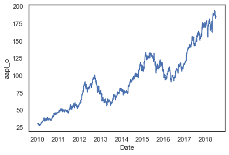
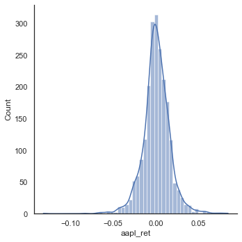
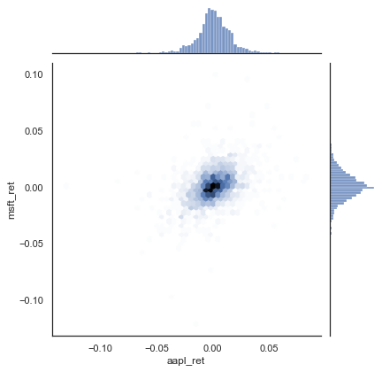

seaborn
seaborn#
We will start our very broad discussion of data visualization with seaborn. seaborn is based on matplotlib, but is “higher-level” (i.e. easier to use) and makes what many consider nicer looking graphs (i.e. many = me).
So, why do we still look at matplotlib? I think it is good to see matplotlib, since it is the most popular way to create figures in Python. But, you should take a look at seaborn as well.
Some people, especially those coming to Python from other languages, are suggesting that you just start with seaborn instead.
seaborn comes with Anaconda and Github Codespaces, so there’s nothing to install. Just add import seaborn as sns to your set-up and you’re ready to go. In my set-up, I’ll set a theme, so that the same theme is used across all of my graphs. I’ll create my returns directly in the stocks DataFrame.
DataCamp has a seaborn tutorial as well.
There’s an example gallery as well.
You can find other examples here.
Finally, I’m going to use the df.var_name convention for pulling out variables from a DataFrame. I find it easier than df['var_name']. I’ll go back and forth in the notes, to get you use to the different styles.
# Set-up
import numpy as np
import pandas as pd
import seaborn as sns
import matplotlib.pyplot as plt
sns.set_theme(style="white")
# Include this to have plots show up in your Jupyter notebook.
%matplotlib inline
# Read in some eod prices
stocks = pd.read_csv('https://raw.githubusercontent.com/aaiken1/fin-data-analysis-python/main/data/tr_eikon_eod_data.csv',
index_col=0, parse_dates=True)
stocks.dropna(inplace=True)
from janitor import clean_names
stocks = clean_names(stocks)
stocks['aapl_ret'] = np.log(stocks.aapl_o / stocks.aapl_o.shift(1))
stocks['msft_ret'] = np.log(stocks.msft_o / stocks.msft_o.shift(1))
stocks.info()
/opt/anaconda3/lib/python3.9/site-packages/pandas/core/computation/expressions.py:21: UserWarning: Pandas requires version '2.8.4' or newer of 'numexpr' (version '2.8.3' currently installed).
from pandas.core.computation.check import NUMEXPR_INSTALLED
/opt/anaconda3/lib/python3.9/site-packages/pandas/core/arrays/masked.py:60: UserWarning: Pandas requires version '1.3.6' or newer of 'bottleneck' (version '1.3.5' currently installed).
from pandas.core import (
/opt/anaconda3/lib/python3.9/site-packages/janitor/utils.py:87: FutureWarning: PandasArray has been renamed NumpyExtensionArray. Use that instead. This alias will be removed in a future version.
@_expand_grid.register(pd.arrays.PandasArray)
---------------------------------------------------------------------------
ImportError Traceback (most recent call last)
Cell In[1], line 17
12 stocks = pd.read_csv('https://raw.githubusercontent.com/aaiken1/fin-data-analysis-python/main/data/tr_eikon_eod_data.csv',
13 index_col=0, parse_dates=True)
15 stocks.dropna(inplace=True)
---> 17 from janitor import clean_names
19 stocks = clean_names(stocks)
21 stocks['aapl_ret'] = np.log(stocks.aapl_o / stocks.aapl_o.shift(1))
File /opt/anaconda3/lib/python3.9/site-packages/janitor/__init__.py:9
5 import lazy_loader as lazy
8 from .accessors import * # noqa: F403, F401
----> 9 from .functions import * # noqa: F403, F401
10 from .io import * # noqa: F403, F401
11 from .math import * # noqa: F403, F401
File /opt/anaconda3/lib/python3.9/site-packages/janitor/functions/__init__.py:25
23 from .change_type import change_type
24 from .clean_names import clean_names
---> 25 from .coalesce import coalesce
26 from .collapse_levels import collapse_levels
27 from .complete import complete
File /opt/anaconda3/lib/python3.9/site-packages/janitor/functions/coalesce.py:7
4 import pandas_flavor as pf
6 from janitor.utils import check, deprecated_alias
----> 7 from janitor.functions.utils import _select_index
10 @pf.register_dataframe_method
11 @deprecated_alias(columns="column_names", new_column_name="target_column_name")
12 def coalesce(
(...)
16 default_value: Optional[Union[int, float, str]] = None,
17 ) -> pd.DataFrame:
18 """Coalesce two or more columns of data in order of column names provided.
19
20 Given the variable arguments of column names,
(...)
87 :raises ValueError: if length of `column_names` is less than 2.
88 """
File /opt/anaconda3/lib/python3.9/site-packages/janitor/functions/utils.py:16
5 import re
6 from typing import (
7 Hashable,
8 Iterable,
(...)
14 Any,
15 )
---> 16 from pandas.core.dtypes.generic import ABCPandasArray, ABCExtensionArray
17 from pandas.core.common import is_bool_indexer
18 from dataclasses import dataclass
ImportError: cannot import name 'ABCPandasArray' from 'pandas.core.dtypes.generic' (/opt/anaconda3/lib/python3.9/site-packages/pandas/core/dtypes/generic.py)
If you don’t have janitor installed, you’ll need to run in a code cell above your set-up code. You should only have to install a package once per code space.
pip install pyjanitor
You can read more about janitor here.
Let’s start with a line plot. We’ll plot just AAPL to start.
sns.lineplot(x=stocks.index, y=stocks.aapl_o)
plt.show();

We can also make a distribution, or histogram, as well. I’ll add what’s called the kernel density estimate (kde), which gives the distribution. We’ll do more data work like this when thinking about risk.
sns.displot(stocks.aapl_ret, kde=True, bins=50)
plt.show();

sns.jointplot(x=stocks.aapl_ret, y=stocks.msft_ret)
plt.show();
<seaborn.axisgrid.JointGrid at 0x7f82ea9b84c0>
sns.jointplot(x=stocks.aapl_ret, y=stocks.msft_ret, kind='hex')
plt.show();
